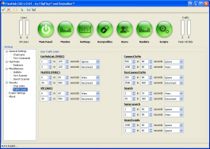

Flexhub
From ADCPortal Wiki
(Redirected from FlexHub)
|  | |
| Developed by | FlipFlop™ and Daywalker™ |
|---|---|
| Initial release | 2011 |
| Stable release | N/A () |
| Beta release | 0.1 svn 1075 (2011-05-22) |
| Written in | LUA |
| Platform | Windows, Linux |
| Available in | 1 languages |
| Type | Hubsoft |
| License | GNU AGPL 3 |
| Website | FlexHub Forum |
Introduction
FlexHub is a Direct Connect hub software programmed completely in LUA by Daywalker™ and FlipFlop™. wxLua is used to create an advanced, but easy to use graphical user interface, with very detailed monitoring.
Key Features
- ADC and NMDC protocol support on the same port, with auto protocol detection, this makes this hubsoft an excellent choice for NMDC-hubowners who would like to switch to ADC without losing the users with outdated NMDC-clients, and still be able to use the same address and port(s).
- Users of different protocols can chat and PM, searching and downloading isn't possible between different protocols.
- Remote GUI, the GUI can be used locally or remotely, communication using ADCS over TCP
- Deflood system, highly configurable
- Text scanner for Mainchat, PM and Searches
- Unlimited user profiles
- Advanced traffic monitor
- Mainchat and PM integrated in GUI, chat from the GUI
- Detailed hub statistics
Planned features
- Support for multiple lua API's to support lua scripts designed for other hubsofts.
- Multilanguage support, separate language for GUI and hubsoft, possibility to let the hub respond to the user in the language determined with GeoIP.
Disadvantages
- Not suitable for very high user counts, currently supporting up to around 1500 users.